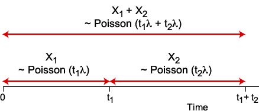
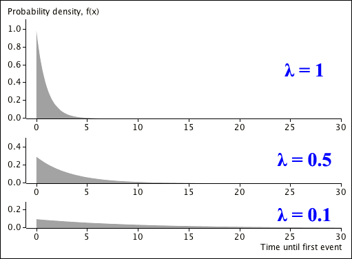

If you don't want to print now,
Simple model for events in time
There are many situations in which 'events' happen at random times. For example,
The simplest kind of model for such events is a homogeneous Poisson process.
Definition
A homogeneous Poisson process is a series of events that occur over time in which:
Less formally,
The parameter \(\lambda\) is the rate of events occurring and is expressed as "events per unit time". For example, a model for emergency requests for ambulances from a hospital might have \(\lambda = 1.5\) call-outs per hour.
This model is often an over-simplification of reality. It might be possible for two ambulances to be called out simultaneously after a bad road accident (not satisfying condition 1). Moreover, the rate of call-outs is likely to vary between different times of day (not satisfying condition 3). However a homogeneous Poisson is an approximation that might still be able to give reasonable insight.
The model can be generalised to a non-homogeneous Poisson process if we allow the chance of an event happening to vary over time, replacing the constant \(\lambda\) with a function of time \(\lambda(t)\).
Single events
There are some scenarios in which only one such event may happen. For example,
The time until the event happens is also random, and can be modelled as the time to the first event in a homogeneous Poisson process.
In a homogeneous Poisson process with events that occur at a rate of \(\lambda\) per unit time, we now define a discrete random variable, \(X\), to be the number of events that occur in one unit of time.
If the unit of time is split into infinitessimally small periods, each of length \(\delta t\), the requirements of a homogeneous Poisson process mean that
Binomial approximation
To derive the probability function of \(X\), we start with a situation in which the above three conditions hold, but \(\delta t\) is larger. If unit time is split into \(n\) intervals, each of length \(\frac 1 n\), the three conditions would mean that the number of events is the number of successes in a series of \(n\) independent Bernoulli trials, each with probability \(\pi = \frac {\lambda} n\) of success, so
\[ X \;\sim\; \BinomDistn \left(n, \pi = \frac {\lambda} n\right) \]The probability function for the number of events in a homogeneous Poisson process can be found as the limit of the probability function of this binomial distribution, as \(n \to \infty\).
Poisson probability function
The number of events in unit time in a Poisson process with rate \(\lambda\) per unit time has probability function
\[ p(x) \;\;=\;\; \frac {\lambda^x e^{-\lambda}} {x!} \quad\quad \text{ for } x=0, 1, \dots \](Proved in full version)
A distribution of this form is called a Poisson distribution.
A formal definition of the Poisson distribution is now given.
Definition
A random variable has a Poisson distribution with parameter \(\lambda\)
\[ X \;\; \sim \; \; \PoissonDistn(\lambda) \]if its probability function is
\[ p(x) \;\;=\;\; \frac {\lambda^x e^{-\lambda}} {x!} \quad\quad \text{ for } x=0, 1, \dots \]A Poisson distribution describes the number of events in any period of a Poisson process, not just unit time.
Poisson distribution for number of events
In a Poisson process with rate \(\lambda\) events per unit time, the number of events, \(X\) in a period of time of length \(t\) has a Poisson distribution
\[ X \;\; \sim \; \; \PoissonDistn(\lambda t) \](Proved in full version)
Some properties of Poisson distributions
If events in a Poisson process occur at rate \(\lambda\) per unit time, then the number of events in time \(t_1 + t_2\) is the sum of the events in time \(t_1\) and those in \(t_2\). The events in \(t_1\) and \(t_2\) are independent and all three variables have Poisson distributions.

Adding two independent Poisson variables therefore results in another Poisson variable that also has a Poisson distribution.
Sum of independent Poisson variables
If \(X_1\) and \(X_2\) are independent Poisson random variables with parameters \(\lambda_1\) and \(\lambda_2\), then
\[ X_1 + X_2 \;\; \sim \; \; \PoissonDistn(\lambda_1 + \lambda_2) \]This extends in an obvious way to the sum of any number of independent Poisson random variables.
Normal approximation for large λ
The shape of a Poisson distribution with parameter \(\lambda\) becomes close to a normal distribution as \(\lambda\) increases.
(Proved in full version)
Shape of Poisson distribution
Here are a few examples of Poisson distributions.
Note that
The Poisson distribution's mean and variance can also be found as a limit of the binomial distribution's mean and variance.
Mean and variance
If \(X\) has a \(\PoissonDistn(\lambda)\) distribution with probability function
\[ p(x) \;\;=\;\; \frac {\lambda^x e^{-\lambda}} {x!} \quad\quad \text{ for } x=0, 1, \dots \]then its mean and variance are
\[ E[X] \;=\; \lambda \spaced{and} \Var[X] \;=\; \lambda \](Proved in full version)
Approximate normal distribution
We can now be more precise about the parameters of the normal approximation to the Poisson distribution.
\[ \PoissonDistn(\lambda) \;\;\xrightarrow[\lambda \to \infty]{} \;\; \NormalDistn(\mu = \lambda,\; \sigma^2 = \lambda) \]This approximation is reasonably good even when \(\lambda\) is as low as 20.
We now give an example where Poisson probabilities are required.
Question: Arrival of phone calls
A homogeneous Poisson process might be used to model arrival of telephone calls in an office. We will assume that calls arrive at a constant rate of \(\lambda = 3\) per hour during the morning (8:30 am to 12:30 pm).
(Solved in full version)
In practical applications, we may be able to assume that the conditions for a Poisson process hold at least approximately, but the rate of events, \(\lambda\), is usually an unknown value that must be estimated from data.
Given a random sample, \(\{x_1, x_2, \dots, x_n\}\), from a \(\PoissonDistn(\lambda)\) distribution, we will use maximum likelihood to estimate \(\lambda\). The logarithm of the Poisson probability function is
\[ \log(p(x | \lambda)) \;=\; x \log(\lambda) - \lambda - \log(x!) \]so the log-likelihood function is
\[ \ell( \lambda) \;=\; \sum_{i=1}^n {x_i} \log(\lambda) - n\lambda + K \]where \(K\) is a constant that does not depend on \(\lambda\). To find the maximum likelihood estimate, we solve
\[ \ell'( \lambda) \;=\; \frac {\sum {x_i}} {\lambda} - n \;=\; 0 \]so
\[ \hat{\lambda} \;=\; \frac {\sum {x_i}} n \;=\; \overline{x} \]Properties of maximum likelihood estimator
From the properties of a sample mean,
\[ E[\hat{\lambda}] \;=\; E[X] \;=\; \lambda \]so the estimator is unbiased. Its standard error is
\[ \se(\hat{\lambda}) \;=\; \sqrt {\Var(\overline{X})} \;=\; \sqrt {\frac {\Var(X)} n} \;=\; \sqrt{\frac {\lambda} n} \]From the Central Limit Theorem (or from the asymptotic properties of MLEs), we also know that \(\hat{\lambda}\) is approximately normal in large samples.
Normal-based confidence interval
An approximate 95% confidence interval for any parameter is the estimate ± 1.96 standard errors. Applying this to the maximum likelihood estimate of \(\lambda\), and replacing \(\lambda\) by its estimate, \(\hat{\lambda} = \overline{x}\) in the formula for the standard error, gives the following 95% CI:
\[ \hat{\lambda} \pm 1.96 \times \se(\hat{\lambda})\;\; = \; \; \overline{x} \pm 1.96 \sqrt{\frac {\overline{x}} n} \]In this section, we consider the time it takes for the first event to occur in a homogeneous Poisson process — a continuous random variable.
Exponential distribution
In a homogeneous Poisson process with rate \(\lambda\) events per unit time, the time until the first event, \(Y\), has a distribution called an exponential distribution,
\[ Y \;\; \sim \; \; \ExponDistn(\lambda) \]with probability density function
\[ f(y) \;\; = \; \; \lambda\; e^{-\lambda y} \]and cumulative distribution function
\[ F(y) \;\; = \; \; 1 - e^{-\lambda y} \](Proved in full version)
The diagram below shows the shapes of a few typical exponential distribution.

All exponential distributions have their highest probability density at \(x = 0\) and steadily decrease as \(x\) increases.
The cumulative distribution function, \(F(x)\), can be used to find the probability that an exponentially distributed variable, \(X\), lies within any two limits
\[ \begin{align} P(a \lt X \lt b) \;\;=\;\; P(X \lt b) - P(X \lt a) \;\;&=\;\; F(b) - F(a) \\ &=\;\; e^{-a\lambda} - e^{-b\lambda} \end{align} \]Question
An organisation's web site is accessed at a constant rate of 20 times per hour between 9am and 5pm. After an update to the site at 10am, what is the probability that the first access is between 10:05am and 10:10am?
(Solved in full version)
Conditional probabilities
The exponential distribution has an important property called its memoryless property.
Memoryless property of exponential distribution
If \(X \sim \ExponDistn(\lambda) \),
\[ P(X \gt s+t \;|\; X \gt s) \;\; = \; \; P(X \gt t) \quad\quad \text{for all }s,t \ge 0\]In other words, knowing that there were no events in the interval \((0, s]\) gives no information about how long it will take for the first event to occur after time \(s\).
(Proved in full version)
Time between events
The memoryless property of a Poisson process with rate \(\lambda\) also means that if it is known that an event happened at time \(s\), the time from then until the next event in the process also has an \(\ExponDistn(\lambda) \) distribution.
The exponential distribution therefore also describes the time between events in a Poisson process.
Mathematical interlude
Various results relating to Poisson processes can be derived most easily using a particular kind of mathematical function called a gamma function.
Definition
The gamma function has a single argument and is defined by
\[ \Gamma(t) \;\;=\;\; \int_0^{\infty} {x^{t-1} e^{-x}} \; dx \]Gamma functions have various useful properties.
Recursive formula
For any \(t\),
\[ \Gamma(t+1) \;\;=\;\; t \times \Gamma(t) \]Two specific values
\[ \Gamma(1) \;\;=\;\; 1 \spaced{and} \Gamma \left(\frac 1 2\right) = \sqrt{\pi} \]Relationship to factorials
For any integer \(t \ge 0\),
\[ \Gamma(t+1) \;\;=\;\; t! \](All proved in full version)
Gamma functions are useful in proving the following result.
Exponential mean and variance
If \(X\) has an \(\ExponDistn(\lambda) \) distribution with pdf
\[ f(x) \;\;=\;\; \lambda e^{-\lambda x} \]then its mean and variance are
\[ E[X] \;\;=\;\; \frac 1 {\lambda} \spaced{and} \Var(X) \;\;=\;\; \frac 1 {\lambda^2} \](Proved in full version)
If \(\{x_1, x_2, \dots, x_n\}\) is a random sample of times between events in a Poisson process — a random sample from an \(\ExponDistn(\lambda)\) distribution — the parameter \(\lambda\) can be estimated by maximum likelihood. Since
\[ \log f(x\;|\;\lambda) \;\;=\;\; \log(\lambda) - \lambda x \]the log-likelihood is
\[ \ell(\lambda) \;\;=\;\; \sum_{i=1}^n \log f(x_i\;|\;\lambda) \;\;=\;\; n\log(\lambda) - \lambda \sum {x_i} \]The maximum likelihood estimate is the solution to
\[ \ell'(\lambda) \;\;=\;\; \frac n{\lambda} - \sum {x_i} \;\;=\;\; 0 \]so
\[ \hat{\lambda} \;\;=\;\; \frac n{\sum {x_i}} \;\;=\;\; \frac 1 {\overline{x}}\]Question: Aircraft air-conditioner failures
The table below shows the number of operating hours between successive failures of air-conditioning equipment in ten aircraft.
| Aircraft number | |||||||||
|---|---|---|---|---|---|---|---|---|---|
| 2 | 3 | 4 | 5 | 6 | 7 | 8 | 9 | 12 | 13 |
| 413 14 58 37 100 65 9 169 447 184 36 201 118 34 31 18 18 67 57 62 7 22 34 |
90 10 60 186 61 49 14 24 56 20 79 84 44 59 29 118 25 156 310 76 26 44 23 62 130 208 70 101 208 |
74 57 48 29 502 12 70 21 29 386 59 27 153 26 326 |
55 320 65 104 220 239 47 246 176 182 33 15 104 35 |
23 261 87 7 120 14 62 47 225 71 246 21 42 20 5 12 120 11 3 14 71 11 14 11 16 90 1 16 52 95 |
97 51 11 4 141 18 142 68 77 80 1 16 106 206 82 54 31 216 46 111 39 63 18 191 18 163 24 |
50 44 102 72 22 39 3 15 197 188 79 88 46 5 5 36 22 139 210 97 30 23 13 14 |
359 9 12 270 603 3 104 2 438 |
487 18 100 7 98 5 85 91 43 230 3 130 |
102 209 14 57 54 32 67 59 134 152 27 14 230 66 61 34 |
Assuming that each aircraft has the same failure rate for its air-conditioning equipment, and the occurrence of a failure in any hour is independent of whether or not the equipment has just been repaired, what is the MLE of the failure rate in this type of aircraft?
(Solved in full version)
Standard error
The asymptotic formula for the standard error of maximum likelihood estimators can be used to get an approximate value for the standard error of \(\hat{\lambda} = \frac 1 {\overline{X}}\).
\[ \ell''(\lambda) \;\; = \;\; -\frac n {\lambda^2} \] \[ \se(\hat{\lambda}) \;\;\approx\;\; \sqrt {- \frac 1 {\ell''(\hat {\lambda})}} \;\;=\;\; \frac {\hat{\lambda}} {\sqrt n} \]Confidence interval
An approximate 95% confidence interval for \(\lambda\) can be found using the asymptotic normality of the maximum likelihood estimator as
\[ \begin{align} \hat{\lambda} \; \pm\; 1.96 \times \se(\hat{\lambda}) \;\;&=\;\; \frac 1 {\overline{x}} \; \pm\; 1.96 \times \frac 1 {\sqrt n \;\overline{x}} \\ &=\;\; \frac 1 {\overline{x}} \left(1 - \frac {1.96}{\sqrt n}\right) \quad\text{to}\quad \frac 1 {\overline{x}} \left(1 + \frac {1.96}{\sqrt n}\right) \end{align} \]Question: Aircraft air-conditioner failures
The mean time between failures of the \(n = 199\) air-conditioners on the previous page was \(\overline{X} = 90.92\) hours with estimated failure rate \(\hat{\lambda} = 0.0110\) failures per hour. Find an approximate 95% confidence interval for the failure rate.
(Solved in full version)
Lifetimes
Manufactured items usually fail at some time after they start to be used, and biological entities also have limited lifetimes. An item's lifetime is denoted by\(X\), with probability density function \(f(x)\) and cumulative distribution function \(F(x) = \int_0^x {f(u) \; du}\).
The survivor function describes the probability that an item's lifetime will be greater than any constant, \(x\).
Definition
The survivor function of random variable \(X\) is
\[ S(x) \;\; = \; \; P(X \gt x) \;\;=\;\; 1 - F(x) \]The conditional probability of failing in the interval \((x, x+\delta x]\), given survival until at least time \(x\) is
\[ \begin{align} P(x \lt X \le x+\delta x \;|\; X \gt x) \;\;&=\;\; \frac {P(x \lt X \le x+\delta x \textbf{ and } X \gt x)}{P(X \gt x)} \\ &\approx \; \; \frac {f(x)}{S(x)} \times \delta x \end{align} \]The quantity \(f(x) / S(x)\) therefore describes the failure rate at time \(x\), conditional on having survived until at least time \(x\).
Definition
The hazard function of random variable \(X\) is
\[ h(x) \;\; = \; \; \frac {f(x)}{S(x)} \;\;=\;\; \frac {f(x)}{1 - F(x)} \]The hazard function is particularly informative — it describes how an item's age, \(x\) affects its risk of failure.
Lifetimes
Consider a light fitting in which the light bulb is replaced whenever it fails. If the failure rate, \(\lambda\), remains constant over time and the risk of failure at any time does not depend on what happened previously, failures would be a homogeneous Poisson process.
We will now concentrate on a single light bulb. Its lifetime is the time until the first event in this Poisson process and would have an \(\ExponDistn(\lambda)\) distribution.
Lifetimes may be modelled as the time until the first event of a Poisson process.
Exponential hazard function
The survivor function for the exponential distribution is
\[ S(x) \;\; = \; \; 1 - F(x) \;\;=\;\; e^{-\lambda x}\]and its hazard function is
\[ h(x) \;\; = \; \; \frac {\lambda e^{-\lambda x}}{e^{-\lambda x}} \;\;=\;\; \lambda\]This constant hazard function corresponds to the "memoryless" property of Poisson processes — the chance of failing does not depend on what happened before and, in particular, how long the item has already survived.
The time until the first event in a homogeneous Poisson process has an exponential distribution. We next find the distribution of the time until the second event in the process.
Time until second event
If \(X\) is the time until the second event in a Poisson process with rate \(\lambda\), it has probability density function
\[ f(x) \;\;=\;\; \begin{cases} \lambda^2 x e^{-\lambda x} & x \gt 0 \\[0.3em] 0 & \text{otherwise} \end{cases} \](Proved in full version)
The pdf of the time until the third event in the Poisson process can be found in a similar way.
Time until third event
If \(X\) is the time until the third event in a Poisson process with rate \(\lambda\), it has probability density function
\[ f(x) \;\;=\;\; \begin{cases} \dfrac{\lambda^3}{2!} x^2 e^{-\lambda x} & x \gt 0 \\[0.5em] 0 & \text{otherwise} \end{cases} \](Proved in full version)
We now generalise this to the time until the \(k\)'th event.
Time until k'th event
The time until the \(k\)'th event in a Poisson process with rate \(\lambda\), has a distribution called an Erlang distribution
\[ X \;\; \sim \; \; \ErlangDistn(k, \lambda) \]with probability density function
\[ f(x) \;\;=\;\; \begin{cases} \dfrac{\lambda^k}{(k-1)!} x^{k-1} e^{-\lambda x} & x \gt 0 \\[0.5em] 0 & \text{otherwise} \end{cases} \](Proved in full version)
Sum of independent exponential variables
In a homogeneous Poisson process, the time until the \(k\)'th event is
\[ X \;\; = \; \; \sum_{i=1}^k {Y_i} \]where \(Y_1\) is the time to the first event, \(Y_2\) is the time from the first event to the second, and so on. From the memoryless property of a homogeneous Poisson process, the \(\{Y_i\}\) are independent and they all have \(\ExponDistn(\lambda)\) distributions.
Since \(X\) is the sum of a random sample of size \(k\) from an exponential distribution, we can use general results about the sum of a random sample to find its mean and variance.
Mean and variance of Erlang distribution
If a random variable, \(X\), has an Erlang distribution with probability density function
\[ f(x) \;\;=\;\; \begin{cases} \dfrac{\lambda^k}{(k-1)!} x^{k-1} e^{-\lambda x} & x \gt 0 \\[0.3em] 0 & \text{otherwise} \end{cases} \]its mean and variance are
\[ E[X] \;=\; \frac k{\lambda}\spaced{and} \Var(X) \;=\; \frac k{\lambda^2} \](Proved in full version)
A final useful property of Erlang distributions that adding together two independent Erlang variables (with the same \(\lambda\)) results in a variable that also has an Erlang distribution.
Additive property of Erlang distributions
If \(X_1 \sim \ErlangDistn(k_1,\; \lambda)\) and \(X_2 \sim \ErlangDistn(k_2,\; \lambda)\) are independent, then
\[ X_1 + X_2 \;\;\sim\;\; \ErlangDistn(k_1 + k_2,\; \lambda) \](Proved in full version)
Gamma distribution
The Erlang distribution is a special case of a more general distribution called the Gamma distribution — it generalises the Erlang distribution by allowing for non-integer values of the parameter k.
Probabilities
Because of the strong relationship between Erlang and Gamma distributions, we will wait until the section about Gamma distributions in the next chapter before explaining how to find probabilities for Erlang random variables.